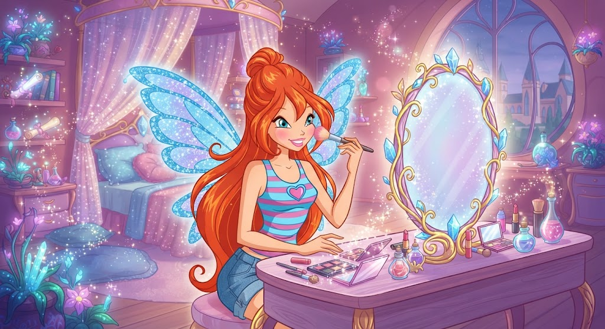

Beauty-Style-Confidence
Discover the art of makeup
Learn how to choose makeup products, create beautiful looks and express your individual style
Explore Makeup
Welcome to WINX studio
Makeup is more than cosmetics. It is a creative way to express yourself, highlight your features and feel confident.